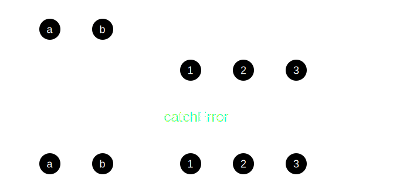

Network communication
Lesson 03
SWAFE-01
Network
Communication
Overview
- Most dynamic web applications gets data from other sources
- Hypertext Transfer Protocol (HTTP) and WebSocket Protocol is commonly used to serve data
Client-server model
HTTP
Hypertext Transfer Protocol
The HTTP/1.1 specification
- Defined in IETF RFC 2616
- IETF – International Engineering Task Force
- RFC – Request For Comments
- IETF is the Internet standards body
- Developing open standards through open processes
- An international community of network designers, operators, vendors, and researchers
- Concerned with the evolution of the Internet architecture and the smooth operation of the Internet
- An RFC is a publication format used by IETF
- Protocols, procedures and programs
- Concepts
- Meeting notes
HTTP methods
POST—send data to the serverGET—retrieve a resource from the serverHEAD–retrieve resource metadata from the serverPUT—send data to the server and update an existing entityDELETE—Remove a resource on the serverOPTIONS–Get information about the communication options available
HTTP Response codes
1xxInformational–provisional response2xxSuccessful—indicates that the client's request was successfully received, understood, and accepted3xxRedirection—further action needs to be taken by the user agent in order to fulfill the request4xxClient error–intended for cases in which the client seems to have erred5xxServer error—indicate cases in which the server is aware that it has erred or is incapable of performing the request
HTTP specifications
- Initial releases
- Updated and split up in June 2014
- Other versions
- RFC 7540 Hypertext Transfer Protocol Version 2 (HTTP/2) (May 2015)
- draft-ietf-quic-http-34 Hypertext Transfer Protocol Version 3 (HTTP/3) (February 2021)
HTTP in Angular
Overview
- The ability to request typed response objects
- Streamlined error handling
- Request and response interception
- Testability features
HTTPClientModule
HttpClient
- Wraps HTTP requests in
Observableobjects - Contains methods for some of the most used HTTP requests
get()returns a configuredGETHTTP requestpost()returns a configuredPOSTHTTP requestdelete()returns a configuredDELETEHTTP requestrequest()returns a generic HTTP request
- Used in combination with RxJS operators to filter values and format to desired output
- Can be initiated with
subscribe()orasyncpipe
SpaceService
Typed response
Overview
- Consume output more easily and obvious
- Response types can act at type assertion at compile time
- But is not guranteed that the server will respond with the expected type
- Be sure to have proper error handling
- RxJS transformation
- Use the map operator to transform response data as needed by the UI
- Read the transformed data with the
asyncpipe in the template
Response type for Astronaut
Response type for LaunchVehicle
Requesting data from a server
Display data in templates
Same-Origin security model
&
Cross-Origin Resource Sharing
Overview
- The Cross-Origin Resource Sharing (CORS) standard adds new HTTP headers, that let servers describe which origins are premitted to access data from a web browser
- CORS failures results in errors, but for security reasons, specifics about the error are not available to JavaScript
Same-origin policy
- The same-origin policy is a critical security mechanism that restricts how documents and scripts loaded by one origin can interact with a resource from another origin
- Definition of an origin
- A origin is a tuple comprised of
[protocol, host, port]protocol—The protocol used:http://,https://, etc.host—The resource location: swafe-01.dk, ece.au.dk, etc.port—The port number, if specified
- Implemented by all major browsers (Google Chrome, Firefox, Microsoft Edge, etc.)
Cross-Origin Resource Sharing (CORS)
- The need to relax the same origin policy
- CORS is a protocol
- Simple and preflighted requests
- Simple requests (
GET,POST, andHEAD) does not trigger a CORS preflight - Methods like
PUT,DELETE, andPATCHtrigger a CORS preflight
- Simple requests (
- Preflight requests happens when requests that causes side-effects on server data
- Set in the header of HTTP requests and responses
GET
Preflight requests
- A CORS preflight request checks to see if the host supports CORS protocol
- It is sent as an
OPTIONSusing three three HTTP request headers:Access-Control-Request-Method—defines what HTTP method(s) will be used for the actual requestAccess-Control-Request-Headers—defines what HTTP headers the client might send with the requestOrigin—indicates where the request originates from
- A preflight response will contain
- Preflight request are automatically issued by the browser
- In normal cases, this means that front-ends developers do not need to craft such requests themselves
Preflight request
Proxying to a backend server
- Proxying support from
webpackdevelopment server is available - Follow these steps to set up:
- Create a file
proxy.conf.jsonin the projectsrcfolder - Add the
proxyConfigoption to theserve target - Check service URLs in the code
- Create a file
- Remember to relaunch the application when changing proxy configuration (rerun
ng serve)
proxy.conf.json
Error handling
Overview
- If the request fails, HttpClient returns an
HttpErrorResponseerror object instead of a successfully response - Two types of errors can occur:
- Error responses The backend might reject a request and return a response with status code
4xxor5xx - Client-side errors Network errors or unhandled exceptions thrown in RxJS operators
- Error responses The backend might reject a request and return a response with status code
- Client-side error will have
statusset to0, error responses will have the HTTP status code (such as404Not Found,500Internal Server Error, etc.
RxJS operators
catchErrorcatches errors on theObservableto be handled by returning a new observable or throwing an errorretryretries theObservablea predefined number of times. Defaults toInfinityretryWhenretries theObservablebased on custom criteria
catchError
Catch errors that happens inside the stream
catchError
Catch errors that happens inside the stream
retry
Retry an observable sequence should an error occur
retryWhen
Retry an observable sequence on error based on custom criteria

retryWhen
Retry an observable sequence on error based on custom criteria
Interception
Request and response interception
- Request and response transformation
- Before sending a request to the server
- Before receiving a response in the application
- Perform implicit tasks
- Such as setting an authentication token for all requests sent to the server
- Alternatively implemented explicitly for every method call
Code example